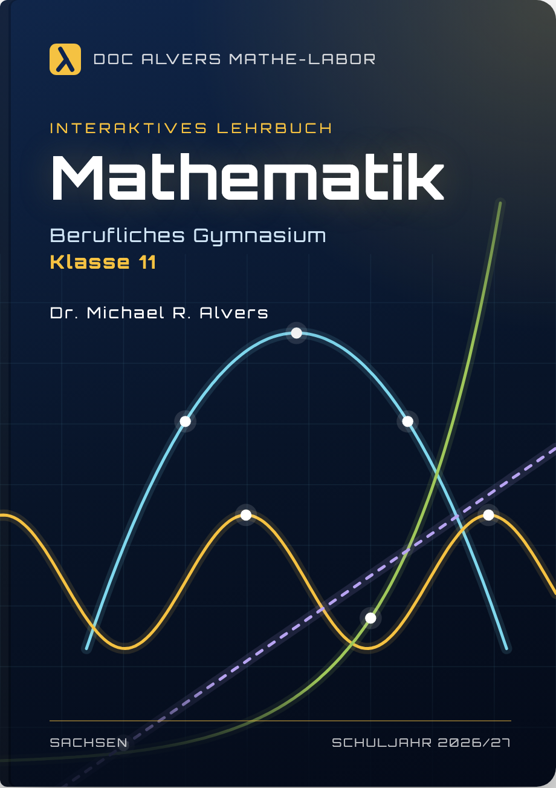
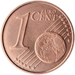
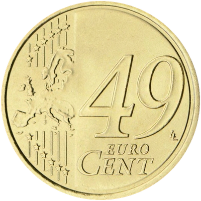
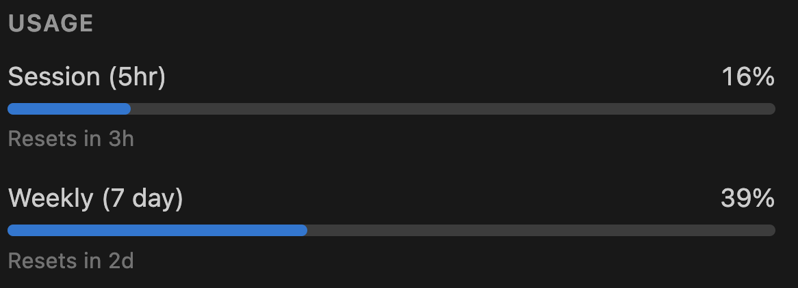
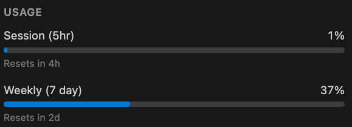
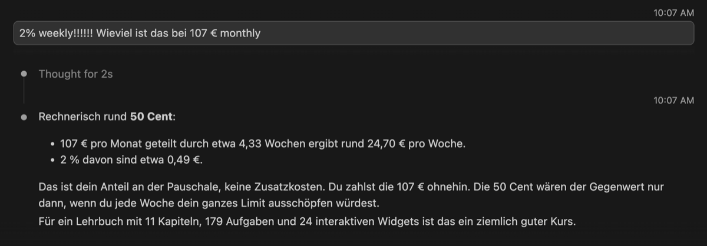
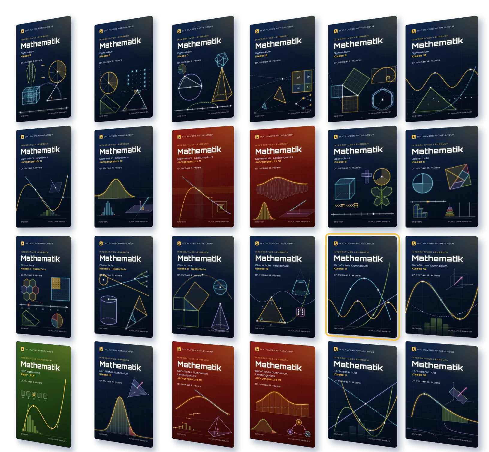
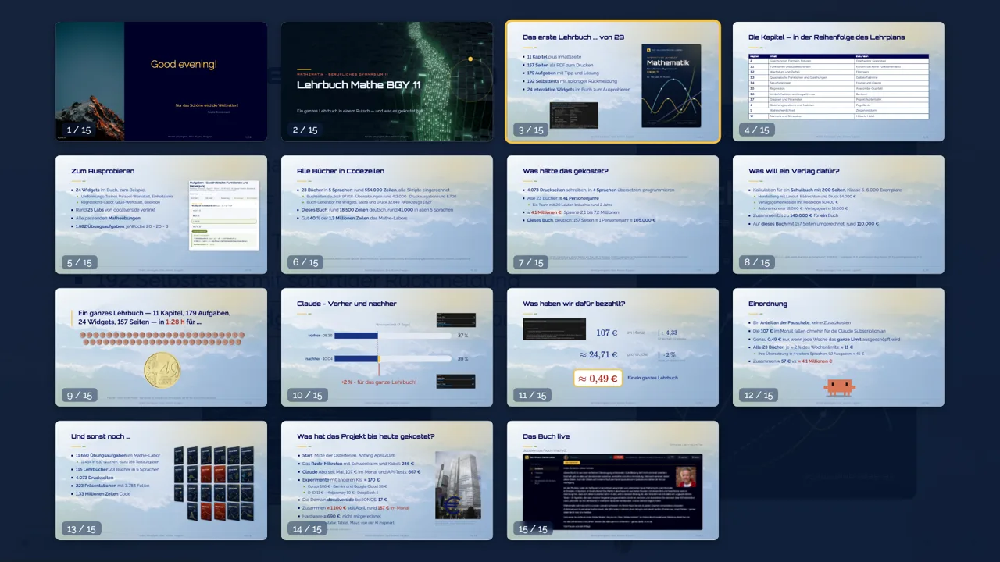
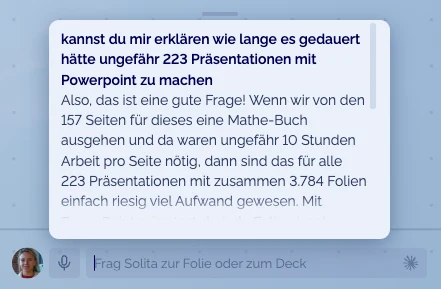

Mathematik · Berufliches Gymnasium 11
Ein ganzes Lehrbuch in einem Rutsch — und was es gekostet hat
Nicht verzagen, Doc Alvers fragen!
11 Kapitel
183 Seiten als PDF zum Drucken
179 Aufgaben mit Tipps und Lösungen
192 Selbsttests mit sofortiger Rückmeldung
24 interaktive Widgets im Buch zum Ausprobieren
23 Labs von docalvers.de verlinkt
1.682 Übungsaufgaben — für 38 Wochen
Verfügbar in 5 Sprachen

Nicht verzagen, Doc Alvers fragen!
| Kapitel | Inhalt | Exkursion |
|---|---|---|
| 2 | Gleichungen, Formeln, Figuren | Diophantos’ Grabrätsel |
| 3.1 | Funktionen und Eigenschaften | Kurven, die keine Funktionen sind |
| 3.2 | Wachstum und Zerfall | Fibonacci |
| 3.3 | Quadratische Funktionen und Gleichungen | Galileis Fallrinne |
| 3.4 | Sinusfunktionen | Fourier und Klänge |
| 3.5 | Regression | Anscombe-Quartett |
| 3.6 | Umkehrfunktion und Logarithmus | Benford |
| 3.7 | Graphen und Parameter | Projekt Achterbahn |
| 4 | Gleichungssysteme und Matrizen | PageRank |
| 1 | Wahrscheinlichkeit | Ziegenproblem |
| W | Numerik und Simulation | Hilberts Hotel |
Nicht verzagen, Doc Alvers fragen!
24 Bücher, 23 davon in 5 Sprachen: rund 565.000 Zeilen, alle Skripte eingerechnet
Buchseiten deutsch 100.323 · Übersetzungen 418.742 · Druckausgaben 9.150
Buch-Generator mit Widgets, Solita und Druck 33.676 · Werkzeuge 3.013
Dieses Buch: rund 4.700 Zeilen deutsch, rund 23.500 in allen 5 Sprachen
Gut 40 % der 1,3 Millionen Zeilen des Mathe-Labors
Gezählt am 02.11.2026: nicht-leere Zeilen in Code-Dateien, ohne Fremdcode, gleiche Dateien einmal
Nicht verzagen, Doc Alvers fragen!
Verlag: 122.400 € für 200 Seiten, also 112.000 € für 183 Seiten
Herstellung 54.000 € · Gemeinkosten 50.400 € · Autor 18.000 €
IT-Firma: 15.500 Zeilen Code programmieren, in 4 Sprachen übersetzen
Davon die Technik (Widgets, Solita, Druck …): 217.000 €, rund 60 %
Buchseiten 93.000 € · Fachübersetzung in 4 Sprachen zusammen 50.000 €
Verlag
112.000 €
gedruckt, nur deutsch
IT-Firma
360.000 €
interaktiv, in 5 Sprachen
Verlag: Sandra Schön (BIMS e. V.), „Was kostet eigentlich ein Schulbuch?“, 2013, 200 Seiten, ohne Gewinn · IT-Firma: 5.000 Zeilen und 100.000 € je Personenjahr (McConnell); Fachübersetzung geschätzt 12.000 € je Sprache für 35.000 Wörter mit Fachlektorat und Satz
Nicht verzagen, Doc Alvers fragen!
Verlag: 4.323 Druckseiten zu je 612 €
IT-Firma: 134.600 Zeilen Code programmieren, 23 Bücher in 4 Sprachen übersetzen
Buchseiten 2,0 Mio. € · Fachübersetzung 1,0 Mio. € · Technik 0,66 Mio. €
Die Technik wird nur einmal gebaut: bei einem Buch 60 %, bei 24 Büchern 18 %
Verlag
2,6 Mio. €
gedruckt, nur deutsch
IT-Firma
3,7 Mio. €
interaktiv, 23 in 5 Sprachen
Rechnung wie auf der Folie davor, gezählt am 02.11.2026: Druckseiten der 24 Bücher, Codezeilen ohne Kommentare; Fachübersetzung 749.000 Wörter samt Widgets in 4 Sprachen, 12.000 € je 35.000 Wörter
Nicht verzagen, Doc Alvers fragen!
Ein ganzes Lehrbuch — 11 Kapitel, 179 Aufgaben, 24 Widgets, 183 Seiten — in 1:28 h für ...


Parodie – keine echte Münze · Münzbilder © Europäische Zentralbank, die 49 von uns hineinbearbeitetNicht verzagen, Doc Alvers fragen!
Wochenlimit (7 Tage)
vorher · 08:36
37 %
nachher · 10:04
39 %
+2 % = für das ganze Lehrbuch!


Nicht verzagen, Doc Alvers fragen!
€
im Monat
52 Wochen : 12 Monate
€
pro Woche
Anteil am Wochenlimit
€
für ein ganzes Lehrbuch

Nicht verzagen, Doc Alvers fragen!
Ein Anteil an der Pauschale, keine Zusatzkosten
Die 107 € im Monat fallen ohnehin für die Claude Subscription an
Genau 0,49 € nur, wenn jede Woche das ganze Limit ausgeschöpft wird
Alle 24 Bücher, je ≈ 2 % des Wochenlimits: ≈ 12 €
Ihre Übersetzung in 4 weitere Sprachen, 92 Ausgaben: ≈ 45 €
Zusammen ≈ 57 € vs. ≈ 3,7 Millionen €
Faktor
65.000 ×
günstiger als die IT-Firma

Nicht verzagen, Doc Alvers fragen!
11.650 Übungsaufgaben im Mathe-Labor
11.464 in 637 Quizzen, dazu 186 Textaufgaben
116 Lehrbücher: 24 Bücher
23 davon in 5 Sprachen
4.323 Druckseiten
223 Präsentationen mit 3.784 Folien
1,33 Millionen Zeilen Code
Ein Programmierer allein: 266 Jahre

Nicht verzagen, Doc Alvers fragen!
Start: Mitte der Osterferien, Anfang April 2026
Das Røde-Mikrofon mit Schwenkarm und Kabel: 246 €
Claude Abo seit Mai, 107 € im Monat und API-Tests: 667 €
Experimente mit anderen KIs: ≈ 170 €
Cursor 106 € · Gemini und Google Cloud 38 €
D-ID 11 € · Midjourney 10 € · DeepSeek 5
Die Domain docalvers.de bei IONOS: 17 €
Zusammen ≈ 1.100 € seit April, rund 157 € im Monat
Hardware ≈ 690 €, nicht mitgerechnet
Monitor, Tastatur, Tablet, Maus: von der KI inspiriert
April bis Oktober 2026 · ohne Rechner und Strom
Nicht verzagen, Doc Alvers fragen!
Diese Folien laufen in DocPoint
Eine Webseite für jeden Browser
Der Autor ändert Text direkt auf der Folie
Solita erklärt und beantwortet Fragen
Echte Labs und Widgets mitten in der Folie


Die Übersicht aller Folien (Taste O)
Solita beantwortet eine Frage zur Folie
Nicht verzagen, Doc Alvers fragen!
docalvers.de/buch/mathe11
Nicht verzagen, Doc Alvers fragen!
Alle Bücher, Labs und Übungen: kostenlos online
Ohne Anmeldung, ohne Werbung, ohne Tracking
Purer Altruismus.
docalvers.de
Dr. Michael R. Alvers
Nicht verzagen, Doc Alvers fragen!